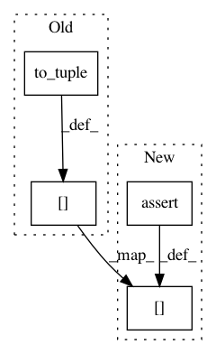

b339ac1b5ffdcfc5fbd5bebb8e27d42aeeab3c52,src/graph_transpiler/webdnn/graph/operators/pooling_2d.py,Pooling2D,__init__,#Pooling2D#Any#Any#Any#Any#,33
Before Change
super().__init__(name)
self.parameters["ksize"] = to_tuple(ksize)
self.parameters["stride"] = to_tuple(stride)
self.parameters["padding"] = to_tuple(padding)
def __call__(self, x: Variable):
self.append_input("x", x)
return self.exec()
After Change
[Pooling2D] Parameter "ksize" must be integer or tuple of integer)
self.parameters["stride"] = assert_sequence_type(to_tuple(stride), int, message=f
[Pooling2D] Parameter "stride" must be integer or tuple of integer)
self.parameters["padding"] = assert_sequence_type(to_tuple(padding), int, message=f
[Pooling2D] Parameter "padding" must be integer or tuple of integer)
def __call__(self, x: Variable):
self.append_input("x", x)
return self.exec()
In pattern: SUPERPATTERN
Frequency: 3
Non-data size: 4
Instances
Project Name: mil-tokyo/webdnn
Commit Name: b339ac1b5ffdcfc5fbd5bebb8e27d42aeeab3c52
Time: 2017-12-09
Author: y.kikura@gmail.com
File Name: src/graph_transpiler/webdnn/graph/operators/pooling_2d.py
Class Name: Pooling2D
Method Name: __init__
Project Name: mil-tokyo/webdnn
Commit Name: b339ac1b5ffdcfc5fbd5bebb8e27d42aeeab3c52
Time: 2017-12-09
Author: y.kikura@gmail.com
File Name: src/graph_transpiler/webdnn/graph/operators/convolution2d.py
Class Name: Convolution2D
Method Name: __init__
Project Name: mil-tokyo/webdnn
Commit Name: b339ac1b5ffdcfc5fbd5bebb8e27d42aeeab3c52
Time: 2017-12-09
Author: y.kikura@gmail.com
File Name: src/graph_transpiler/webdnn/graph/operators/deconvolution2d.py
Class Name: Deconvolution2D
Method Name: __init__